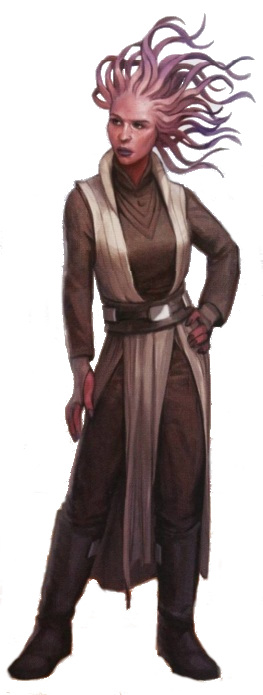

Mikkian
Special Abilities: Mikkians begin the game with one rank in Discipline. They still may not train Discipline above rank 2 during character creation.
Sensory Tendrils: Mikkians add ■ to all Perception checks they make.
Mikkians are a diverse species characterized by a variety of bright skin tones and elaborate crests of head-tendrils. These tendrils are remarkable not only for their appearance, but because they are highly sophisticated and effective sensory organs. Each Mikkian’s head-tendrils are unique, and vary greatly in appearance. This has led to many misconceptions among others as to what a “typical” Mikkian looks like.
Mikkians are known for their loyalty and sense of personal honor and accountability. Sentients who work or fight alongside them quickly come to value Mikkian allies. These traits have been particularly valued among military organizations and the old Jedi Order.
Mikkians exhibit a variety of bright colors in their skin pigmentation, with various reds and pinks, blues, greens, and yellows being relatively common. Coloration varies greatly even among closely related Mikkians, and more often than not, siblings or parents and children are completely different colors. Mikkians’ features are typical of most humanoid species, with the notable exception of a lack of ears and the presence of motile head-tendrils.
Even more distinctive than their skin tones is the seemingly endless variety in Mikkians’ head-tendrils. No two sets are identical; they vary in both number and form, to the extent that many outsiders are surprised to learn any two Mikkians are of the same species. Head-tendrils range from fanlike crests and tape-like ribbons to cylindrical tentacles and membranous fins. Some taper from a broad base to a thin tip, while others are consistent, and they vary in length from a few centimeters up to nearly a half-meter. The number of tendrils on a Mikkian’s head similarly ranges from only a handful to dozens.
Regardless of their appearance, all Mikkians head-tendrils are motile. The exact nature of the movement varies with the form of the tendrils but is usually fluid and nearly constant. Tendril movement is largely involuntary, and primarily a function of the tendrils’ sensory capabilities. However, some Mikkians learn to exert a degree of control. The motions of tendrils can broadcast clues to a Mikkian’s emotional state in much the same way as facial expressions and other body language, although only fellow Mikkians or outsiders who are very familiar with the species would be able to identify these tells.
Mikkians’ head-tendrils serve an important function beyond the superficial. Despite their endless variety, all head-tendrils contain elaborate networks of sensitive nerves, which constantly gather information through a variety of means. Most importantly, the tendrils detect vibrations, particularly sound waves, and so allow Mikkians to hear in much the same fashion as do other species’ ears. In fact, Mikkian head-tendrils are vastly more sophisticated than the auditory organs of most humanoid species and additionally detect such information as humidity, temperature, magnetic direction, and more with an impressive degree of accuracy. Mikkian head-tendrils even detect radiation to the extent that they can "see” light and dark, although Mikkians’ eyes remain their primary visual sense organs.
Mikkian culture prizes integrity and kinship. To most Mikkians, loyalty to family and comrades is the highest value, though their sense of honor encompasses much more. Mikkians respect honesty, and generally resort to duplicity only in the most extreme situations. Mikkian forthrightness can come across to other sentients as blunt or even rude, while Mikkians sometimes have a hard time adjusting to the more flexible views of other species.
The Mikkian code of honor applies to all things, but particularly matters of warfare. After all, in nothing else are the consequences so severe. Mikkian culture respects warrior traditions, but values discipline and honor over physical power or even victory. This, along with Mikkia’s strong spiritual tradition, explains why Mikkian society always had a highly favorable opinion of the Jedi Order. For a child to join the Jedi was among the greatest of accomplishments, and brought considerable honor and esteem to an entire family.
Mikkia is a verdant world located in the Expansion Region. Their homeworld is as diverse as the Mikkians themselves, with an astoundingly wide range of biospheres and climes. Mikkia is home to both icy poles and sweltering equatorial jungles, to deep oceans and arid deserts, to towering mountain ranges and vast plains. Some scholars even theorize that this environmental variety might have contributed to the physical variance among Mikkians.
Mikkia was a part of the Republic for thousands of years, and still held a seat in the Galactic Senate at its dissolution. Since the rise of the Empire, Mikkia’s role on the galactic stage has suffered. The destruction of the Jedi Order contributed to a high level of anti-imperial sentiment on the planet. The resulting increase in Imperial scrutiny has only fostered further resentment, and Mikkians’ tendency to speak truthfully on matters of great concern has led to many tragic outcomes.
The Mikkian language is a melodic, flowing tongue characterized by soft sounds and subtle intonations. Mikkian words tend to flow one into another, and for non-speakers, it can be difficult to tell where one word ends and another begins. Most Mikkians take pride in the beauty of their spoken language but have no qualms about learning and using Basic to communicate with others. Distinct dialects of Mikkian from the ancient past persist even today, and on rare occasions lead to communication difficulties or awkward misunderstandings between Mikkians of different regions and families.
There exists a long history of the Force on Mikkia. Belief in the Force plays an important part in Mikkian religious traditions, and Force sensitives have often found a place in the priesthood, even during the time of the Jedi. Since the rise of the Empire, Mikkian spirituality has been a source of some trouble for the species, particularly since Mikkians are largely unwilling to hide or alter their beliefs to placate Imperial observers.
A positive view of the Jedi persists on Mikkia. Mikkians continue to honor the memory of ancestors and family who joined the Jedi. Lingering questions about the destruction of the order and the Empire’s attempts to erase its legacy contribute to the strong anti-imperial attitudes that prevail among Mikkians. Two decades of Imperial propaganda can scarcely sweep away millennia of cultural memory.
Given the seemingly limitless variety in their appearance, it is no surprise that Mikkians see their head-tendrils as an important sign of their individuality. Many further distinguish themselves with a personal look, and it is common for Mikkians to apply pigment or makeup to their tendrils. Headwear and jewelry are also popular, from rings and circlets to tiaras and delicate chains. Like the cosmetic choices of many species, the colors and application often hold a degree of cultural significance, even though the final result is one of personal expression.
Mikkia’s mystic traditions emphasize destiny and fate. Although most Mikkians today consider such beliefs antiquated superstition, tradition holds that an individual’s head-tendrils predict much about their future. Tendril-reading has been a large part of Mikkian religious training for countless thousands of years. The discipline is incredibly complex, with every facet of the tendrils, from length to taper to shape and number, contributing to the meaning.